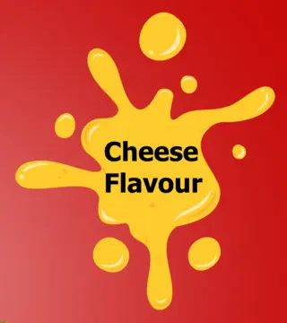

Packaging / snack bag
Majd Snack: a flavour
you can read from afar.
- Client
- Majd — Duhok
- Product
- Corn snack — cheese, and chili & cheese
- Weight
- 200 g
- Pieces
- Two flat bags, two flavours
- My role
- Full design of both bags, including the beaver character

01
Project Overview
A 200 g cheese-flavour corn snack, marked «Made in Kurdistan — Duhok».
02
Design Challenge
On the shelf it sits among many colourful bags, so the name and the flavour have to land before the shopper gets close.
03
Design Approach
- Red and yellow: the strongest possible contrast between background and logo, and a familiar pairing for cheese snacks.
- A hand-drawn logo with a black outline: chunky, irregular letters in a black-and-white outline, so the name stands out even on deep red.
- The character on the product: a beaver I drew, sitting on the pile of snacks itself, so the key image shows both product and character.
- Flavour as a cheese splash: the «Cheese Flavour» badge is shaped like melted cheese, and similar splashes in the corners repeat the signal.
- A clear centre for the image: ingredients, barcode, address and weight live on the edges, away from the front.
Same brand, a second flavour.
- The logo stays, the background changes: the same yellow MAJD SNACK logo with its black outline, on deep blue instead of red, so both flavours read as one family on the shelf.
- Illustration instead of photo: the fries, chillies and cheese are drawn in a flat style that matches the characters, instead of the product photo used on the red bag.
- A free-form flavour badge: «Chili & Cheese Flavour» inside a soft yellow shape, answering the cheese splash on the red version.
- Information on the edges: nutrition, ingredients and weight on the right as on the red bag, the address on the left, and the barcode moved to the right under the weight.
04
Final Deliverables
- Cheese-flavour bag200 g flat bag, red version
- Chili & cheese bagFlat bag, blue version
- Beaver characterDrawn for the cheese bag
05
Project Gallery



Second flavour / chili & cheese


Have a product that needs packaging?
Send the product type, the size and the languages you need.